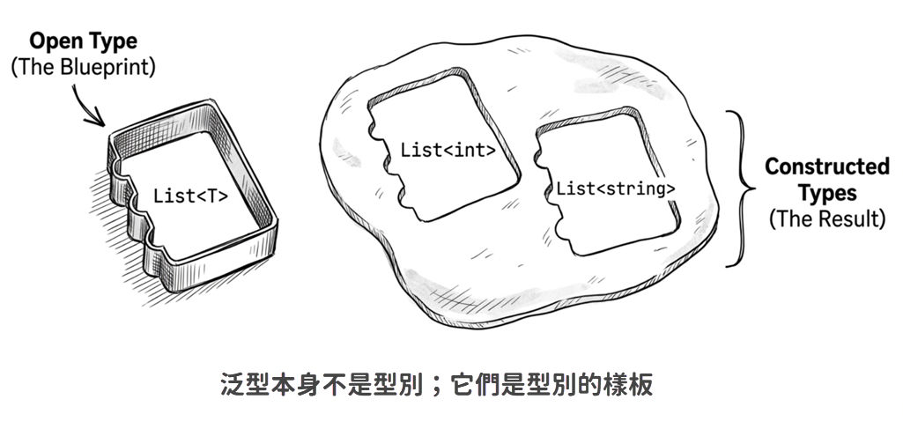
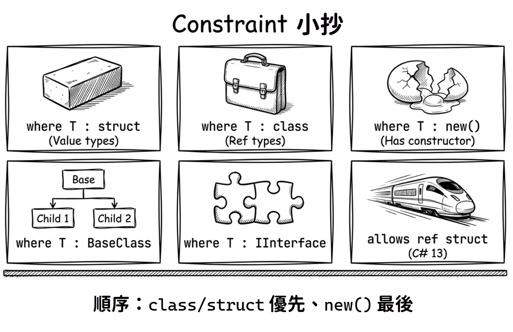

第 7 章：泛型
布魯斯：「羅賓，為什麼你的程式裡面有那麼多自訂的集合類別？像是
EmployeeList、CustomerList、VendorList這些，它們有什麼特殊用途嗎？」羅賓：「喔，沒有啦。你也知道，早期用
ArrayList來存放這些物件的話，每次取出元素都得寫一大堆型別轉換的程式碼。為了避免手動轉型，我就分別為員工、客戶、廠商各自定義專屬的集合類別。雖然剛開始要花點時間寫，但一旦寫好了，使用時就有編譯時期型別安全的好處，而且不用手動轉型，程式碼也更簡潔。」布魯斯：「嗯，我想你說的沒錯。但……你有考慮過泛型嗎？」
本章將探討 C# 的泛型（generics）設計。泛型是現代 C# 重要的抽象化機制，讓我們能夠撰寫型別安全且可重複使用的程式碼，同時避免不必要的效能耗損與執行時期型別轉換錯誤。它也很符合「避免重複」（Don’t Repeat Yourself；DRY）的設計原則。
7.1 為什麼需要泛型？
在介紹泛型（generic types）語法之前，先來看看如果沒有泛型，程式開發會遇到哪些不便。
手動轉型的代價
假設我們有一批整數要處理，但無法事先知道數量，或者程式執行過程中可能會動態增加或減少元素。這時候，固定大小的整數陣列就不太合適，通常會改用集合。在沒有泛型的情況下，我們可能會選擇 ArrayList：
這種寫法有三個問題：
- 冗長：每次取出元素都要寫轉型語法。
- 效能：處理集合時，常常會用迴圈取出或存入元素。如果迴圈次數很多，手動轉型也會反覆執行。單次轉型的成本通常很小，但次數頻繁時，仍可能對執行速度造成影響。
- 型別安全：這是最嚴重的問題。看下一段說明。
延續前面的例子，如果取出元素的時候這樣寫：
DateTime dt = (DateTime)intList[1]; // 編譯 OK！ 執行時會出錯！雖然可以通過編譯，執行時卻會出錯，因為 int 無法轉型為 DateTime——這兩種型別是不相容的。
這就是型別不安全的典型例子。當你使用 ArrayList 這種儲存 object 的集合時，編譯器無法知道你放進去的實際型別，也無法阻止你把原本的整數轉成日期來用。型別轉換的成敗責任，完全落在你（開發人員）身上。
手動轉型不僅囉嗦、稍微影響效能，最麻煩的是它讓編譯器失去了保護你的能力。
自訂集合的代價
在沒有泛型的情況下，解決前述轉型問題的一個方法，就是如本章開頭引言中羅賓的作法：為每一種需要儲存的元素類型設計專屬的集合類別。舉例來說，若需要存放整數串列，我們可能會寫個 IntList 類別：
public class IntList
{
private ArrayList _numbers = new ArrayList();
public void Add(int value)
{
_numbers.Add(value);
}
public int this[int index]
{
get { return (int)_numbers[index]; }
set { _numbers[index] = value; }
}
}
public class StringList
{
private ArrayList _strings = new ArrayList();
public void Add(string value)
{
_strings.Add(value);
}
public string this[int index]
{
get { return (string)_strings[index]; }
set { _strings[index] = value; }
}
}最後，我們可能會寫出一堆大同小異的類別，例如：IntList、StringList、StudentList、EmployeeList……等等。這些類別的目的只是讓我們在存取集合元素時，不用手動轉型，也降低執行時期型別轉換失敗的風險。使用起來的確比較乾淨：
但為了避免手動轉型而額外寫一堆類別，真的值得嗎？這種複製一份再修改的方式，勢必會產生許多重複程式碼。將來如果需要為串列增加新的方法或屬性，就必須逐一修改這些類別。複製時很快，維護時卻很麻煩，而且會增加測試成本。
我們想要的是：不用自己寫一堆自訂集合類別，同時又享有編譯時期型別安全檢查。泛型正是為了處理這類需求而存在。
泛型的做法
延續上一節的 IntList 和 StringList 例子，如果改用泛型來解決，就可以省掉大部分重複程式碼。我們可以選擇 .NET 類別庫提供的泛型集合：List<T>（讀作 List of T）。其中的 List 表示用途為串列；<T> 則代表這個泛型在使用時必須帶入一個型別作為參數。這也是泛型又稱為「參數化型別」的原因。
先不用急著理解所有泛型語法。把前面的範例改用泛型集合後，程式碼會變成這樣：
這樣一來，我們不再需要手動轉型，也不用另外撰寫 IntList 和 StringList 類別。而且，由於編譯時期就已經知道集合元素的型別，現代的程式編輯器（如 Visual Studio Code）的 IntelliSense 功能也能在存取集合元素時提示實際型別。
原始碼： DemoWhyGenerics
了解泛型的基本用法和優點之後，接著來看泛型語法。
7.2 細說泛型
若單從「泛型」這個詞彙的字面來解釋，也可以說是「可廣泛應用的型別」。為什麼說廣泛應用呢？因為你只需要定義一個型別，就可以套用在各種類似的情境或用途。簡言之：寫一次，重複套用。
拿前面的例子來說，當我們的應用程式需要各種串列，例如整數串列、字串串列、員工串列、客戶串列……等等，既然它們都是串列，且都具有串列的共同屬性和行為，那麼最理想的做法，通常是寫一個通用的串列類別，然後套用到任何需要使用串列的場合。當然，它還得具備編譯時期的型別安全檢查才行。
剛才舉例的那些串列類別，彼此共同且不變的特徵是「串列」，唯一差異則是串列裡儲存的元素型別：可能是字串、整數、員工、客戶等等。泛型可以把這些會變動的部分抽離出來，定義成參數。如此一來，固定不變的部分只需要寫一次，其餘變動的部分則在使用時帶入。
接著來看如何用泛型語法定義自己的泛型類別。
泛型、型別參數、建構的型別
泛型可用於類別、介面、委派、和方法。這裡要先介紹的是宣告泛型類別的基本語法：
其中以角括號 <> 包住的 T1, T2, ..., Tn 即是所謂的「型別參數」（type parameters），也就是先前提過的「變動的部分」。型別參數可有一至多個，端看實際的需要而定。
慣例上，型別參數的名稱通常以一個大寫英文字母 T 開頭，如果只有一個型別參數，通常就單純命名為 T，例如：List<T>。若有多個型別參數，則建議使用望文生義的名稱，以便識別。
像 .NET 的泛型集合 Dictionary<TKey, TValue> 就很清楚，一看就知道這個泛型集合所要儲存的每一筆資料都包含兩種元素：key（索引鍵）與 value（資料值），而這兩種元素的真正型別，則是等到實際要使用集合物件的時候才以參數的方式帶入。
請注意「類別名稱<T>」並不是真正用來建立物件實體的類別，而只是可帶入型別參數的型別藍圖。你不能直接用這種開放型別來建立物件實體。若借用「樣板」來比喻，也只是幫助理解的說法，和 C++ template 的編譯時期展開機制並不相同——.NET 泛型是在執行時期由 JIT 編譯器展開的，這一點在 7.7 節會進一步說明。
當我們在程式中使用泛型來建立物件時，必須指定欲帶入的型別參數，例如 Dictionary<int, string> 或 Dictionary<string, Employee> 等等，而這些有帶入型別參數的類別，才是程式執行時真正使用的類別。這些「真正的類別」有個正式稱呼，叫做「建構的型別」（constructed type）或「關閉型別」（closed type）。相對的，由於在宣告泛型的時候會提供一些型別參數，開放讓外界指定實際要用的型別，故使用泛型語法所宣告的型別又稱為「開放型別」（open type）。
泛型是型別的樣板
在學習物件導向程式語言的時候，有一個很常見的譬喻：類別就像是製作餅乾的模具，而物件則是根據模具壓出來的餅乾；只要先把模具設計好，就可以壓出無數個形狀一樣的餅乾。
那麼，泛型又是什麼呢？
泛型就是「模具的模具」。

或者更直白一點：泛型是型別的樣板。如果你把 List<int> 和 List<string> 想成兩種不同的餅乾，那麼泛型 List<T> 就是用來製作這些具體類別的模具。這個模具裡有一些「空位」（也就是型別參數 T），等你填入真正的型別（例如 int 或 string）之後，它才會變成可以使用的類別藍圖。
只有建構的型別才能用來建立物件實體：
如果你是在泛型類別或泛型方法的內部，而 T 剛好就是該處可用的型別參數，那麼 new List<T>() 便是合法的。例如：
T 能不能用，取決於你目前所在的泛型範圍。如果它是在類別或方法上宣告的型別參數，就可以在那個範圍內拿來建構其他泛型型別。
自訂泛型類別
雖然 .NET 已經提供現成的泛型串列，這裡仍假設你因為某些特殊原因，需要設計自己的泛型串列，並將它命名為 MyGenericList。
為了凸顯語法重點，下面先沿用前面章節出現過的 ArrayList，示範如何把元素型別抽成參數。實務上若要真正實作泛型集合，通常會直接以 T[]、List<T> 或其他泛型集合來儲存資料，才能同時保有型別安全並避免不必要的 boxing/unboxing：
其中的 T 即為型別參數。與前面的 IntList 和 StringList 對照後可以看到：只要是需要用到元素型別的地方，都改以型別參數名稱 T 表示。等到真正使用「建構的型別」（constructed type）時，編譯器便會以外部指定的型別帶入 T。下面是實際建立物件的程式碼：
此例中，根據泛型 MyGenericList<T> 所建構的型別共有兩個，分別是 MyGenericList<int> 和 MyGenericList<Employee>。也就是說，同一份泛型定義可以在使用時帶入不同型別，形成不同的建構型別，再各自建立物件實體。
建構式與終結器
泛型類別的建構式和終結器（finalizer）名稱不需要加上型別參數：
型別參數只有在類別定義和成員簽章中才會出現，但建構式/終結器名稱本身必須是不帶型別參數的類別名稱（如 MyGenericList）。
建構式可以在泛型類別內部參與型別參數的使用：
這裡的重點不是建構式本身有什麼特殊語法，而是它和其他成員一樣，可以使用類別層級宣告的型別參數 T。
預設值的表示法
由於型別參數 T 可能是任何型別，我們無法寫死特定的預設值（如 0、null、false）。此時應使用 default 運算子：
對於不同型別，default 會傳回：
- 實值型別：
0、false、或所有欄位為零的結構 - 參考型別：
null
如果專案已啟用 Nullable Reference Types（NRT），像上例這種「可能回傳 null」的方法，通常會把回傳型別寫成 T?，這樣程式碼的意圖會更清楚，也比較不會觸發 nullable 警告。
C# 版本差異：
實用範例：清空陣列
下面的 Zap 方法可清空任何型別的陣列，重點在於它如何處理預設值：
如果專案啟用了 Nullable Reference Types，像這樣把參考型別陣列元素設成 null，有時會搭配 default! 來明確表達「我知道這裡可能會是 null，而且這正是我想要的結果」。這裡的 ! 只是在編譯時期抑制 nullable 警告，不會改變實際的值，也不會阻止 null 出現在陣列裡。
原始碼： DemoGenericClass
範例專案中的
MyGenericList<T>已改用T[]陣列儲存資料，這是較接近實務的實作方式；本節前面的ArrayList版本則是為了凸顯泛型語法重點而刻意簡化。
泛型 attribute（C# 11）
在 C# 11 之前，如果你想要宣告一個帶有 Type 參數的 attribute，必須這樣寫：
這種寫法有些冗長，而且必須使用 typeof 運算子。從 C# 11 開始，我們可以宣告「泛型 attribute」：
使用時就可以直接指定型別引數：
不過，這裡的限制不只是「型別參數必須完全閉合（fully constructed，例如 string 而不是開放的 T）」而已；它還必須符合 typeof(...) 可接受的型別限制。換言之，像 dynamic、List<string?> 這類無法直接穩定表示於 attribute 中繼資料的型別，仍然不能用作泛型 attribute 的型別引數。
進一步來說，dynamic 在 CLR 層級等同 object，而 string? 的 nullable annotation 並非 CLR 型別系統的一部分，因此兩者都無法以你期待的方式穩定出現在 attribute 中繼資料裡。這套限制確保了泛型 attribute 的型別引數能在 CLR 中繼資料中被穩定表示。
原始碼： DemoGenericAttribute
7.3 型別參數的條件約束
到目前為止的例子，都是用來儲存特定型別資料的泛型類別。如果你設計泛型時，只需要把程式碼中的型別參數替換成外界指定的型別，那麼目前介紹的語法就已經夠用。
不過，有時候我們會需要在泛型類別裡面直接存取那些參數型別的方法或屬性，這時候就會有問題了。
舉例來說，假設我們要設計一個泛型串列，並提供一個方法比較兩個物件的內容。若物件 1 小於物件 2，便傳回負數；大於則傳回正數；相等則傳回 0。這代表我們預期這些物件都有 CompareTo 方法可供比較。直覺上可能會寫出以下程式碼：
這段程式碼在編譯時會出錯：
Tdoes not contain a definition forCompareToand no extension methodCompareToaccepting a first argument of typeTcould be found (are you missing a using directive or an assembly reference?)
這段程式碼無法通過編譯，原因是型別 T 本身並沒有保證一定有 CompareTo 方法。就算你在使用此泛型時傳入的型別真的有 CompareTo 方法，編譯器也無法只憑這點放行。
這是因為在沒有提供型別參數 T 的額外資訊的情況下，編譯器必須假設這個型別 T 可能是任何型別。在 .NET 裡面，任何東西都是物件，亦即任何型別一定都是繼承自 System.Object，因此對編譯器來說，這個 T 就等同於 Object。也就是說，當你要在泛型類別裡面存取 T 的物件實體的成員時，就只有 Object 的成員可以用，例如 Equals()、GetType()、ToString()。
但這樣還沒解決前面提到的需求：有時我們就是需要在泛型類別裡面直接存取參數型別的特定方法或屬性。這時候不要用下面這種 as 轉型方式來繞過問題：
這樣雖然可以繞過編譯器的型別安全檢查，卻可能導致執行時期錯誤。請注意，這裡用的是 as 運算子，不是明確轉型；如果 obj1 並未實作 IComparable<T>，as 會得到 null，接著在呼叫 .CompareTo(obj2) 時便可能拋出 NullReferenceException。
正確的做法，是用泛型語法的 where 子句告訴編譯器：型別參數 T 必須符合特定條件。
where 子句
以剛才的例子來說，我們可以在定義泛型類別的時候，用 where 子句來限定可帶入的型別：
關鍵在第一行後面增加的 where 子句，其作用是告訴編譯器：
將來如果有人想用
MyList<T>，帶入的T必須實作IComparable<T>介面；如果不符合這個條件，就讓程式無法通過編譯。
如此一來，編譯器就能夠確定這個 T 一定有實作該介面所定義的成員，自然也就允許我們在此泛型類別中使用那些成員了。
由於 where 子句可限制外界能夠傳入泛型的型別參數，因此這項語言機制有個正式稱呼，叫做「泛型約束」（generic constraints）。本書也會稱它為「條件約束」，因為它本質上就是替型別參數設定條件。
多重條件約束
剛才的範例屬於比較單純的條件約束。你也可以限定型別參數必須實作多個介面，或者繼承自某個類別。若要限定類別繼承，只能指定一個類別，因為 C# 並不支援多重繼承。下面是稍微複雜一點的例子：
上面這段程式碼可以這麼解讀：泛型 MyPair<TKey, TValue> 的型別參數 TKey 必須繼承自 MyKey 類別，且實作 IComparable<TKey> 與 IEquatable<TKey> 介面；型別參數 TValue 只要實作 IComparable<TValue> 介面即可。從這個範例當中也可以看到，where 子句是可以寫在獨立一行的，不必非得緊跟在類別名稱後面。
TKey必須繼承自MyKey類別，且實作IComparable<TKey>與IEquatable<TKey>介面TValue必須實作IComparable<TValue>介面
注意事項：
- 類別約束只能有一個（因為 C# 不支援多重繼承）
- 介面約束可以有多個
- 如果同時有類別與介面約束，類別必須寫在第一個
class 和 struct 約束
使用 class 或 struct 關鍵字可以限定型別參數必須是參考型別或實值型別：
這兩個關鍵字必須寫在條件約束的第一個位置：
new() 約束
如果需要在泛型類別內部建立型別參數的實體，必須使用 new() 約束：
這個 new() 約束的作用是告訴編譯器：型別參數 T 必須提供可存取的無參數建構式（預設建構式）。如此一來，編譯器就允許我們在泛型類別中使用 new T() 來建立物件實體。
在使用 new() 約束時，有兩個重要的規則需要注意：
規則 1：new() 通常必須寫在其他條件的最後
若有使用 C# 13 引入的 allows ref struct anti-constraint，則它必須放在 new() 之後。
規則 2：new() 不能與 struct 同時使用
這是因為 struct 本身就保證可用 new T() 建立預設值，因此編譯器不允許這兩者同時出現，以避免冗餘的約束條件。注意，從 C# 10 開始，struct 也可以宣告自訂的無參數建構式；但無論有沒有自訂，struct 約束都已隱含保證 new T() 可用。
常見的條件約束組合
以下是一些實務上常見的約束組合：
// 可為 null 的參考型別
public class NullableContainer<T> where T : class?
{
private T? _value;
}
// 不可為 null 的參考型別（需啟用 Nullable Reference Types）
public class NonNullContainer<T> where T : class
{
private T _value = default!; // 需要 null-forgiving operator
}
// 實作特定介面且有預設建構式
public class Repository<T>
where T : IEntity, new()
{
public T Create() => new T();
}
// 繼承特定基底類別
public class DomainService<TEntity, TRepository>
where TEntity : Entity
where TRepository : IRepository<TEntity>
{
// ...
}
// C# 13：允許 ref struct（如 Span<T>）
public class SpanWrapper<T> where T : allows ref struct
{
// T 可以是 Span<int>，但必須遵守 ref safety 規則
public void Process(T data) { }
}allows ref struct 約束（C# 13）
在 C# 13 之前，泛型型別參數 T 預設是不允許填入 ref struct（例如 Span<T> 或 ReadOnlySpan<T>）的。這是為了保證記憶體安全，防止這些只能存在於堆疊（stack）上的結構被意外地放到堆積（heap）上（例如被 boxed 成物件）。
但這也限制了泛型演算法在高效能場景的應用。為此，C# 13 引入了 allows ref struct 這個「反向約束」（anti-constraint）：
加上這個約束後，編譯器就會允許你傳入 Span<int> 等 ref struct 型別，同時它也會嚴格檢查方法內部對 T 的操作，確保不會違反 ref 安全規則（例如不能將 T 類型的變數作為欄位儲存在類別中）。這對於撰寫高效能的通用程式庫很有幫助。
這些約束規則看起來零碎，但實際使用時，通常只是依照需求逐步加上去：需要呼叫某個介面成員，就加介面約束；需要建立實體，就加 new()；需要支援 Span<T> 這類型別，才考慮 allows ref struct。
原始碼： DemoConstraints

7.4 泛型介面與結構
除了泛型類別，我們還可以利用泛型語法定義泛型介面與泛型結構。先從介面開始，因為它很常用來描述一組泛型型別都必須遵守的合約。
泛型介面
假設我們想把 MyGenericList<T> 類別中有關串列的基本操作和屬性抽離出來，定義成一個串列介面，程式碼可能會像這樣：
然後讓 MyGenericList<T> 實作此介面：
泛型類別實作介面的規則，和一般類別相同：如果類別在宣告時指定要實作某個（或某些）介面，就必須提供介面規定的所有成員，包括方法、屬性、事件，否則無法通過編譯。
實作泛型介面的方式
實作泛型介面時，型別參數通常有兩種處理方式：
方式 1：保持型別參數開放
在此範例中，Hello1 泛型類別實作了泛型介面 ISayHello<T>，而且在宣告實作介面時，泛型介面的型別參數仍舊維持 T，亦即該型別同樣是由外界指定。
方式 2：明確指定型別參數
下面的 Hello2 則是在宣告時明確指定要實作的泛型介面是 ISayHello<int>。由於這個類別本身不需要額外的型別參數，因此這裡直接宣告為一般類別，讓範例聚焦在「把介面的型別參數固定為 int」這件事。
這兩種寫法都可以編譯、執行，該用哪一種，端看實際的需要而定。一般來說，Hello2 這種寫法會用在特別需要把介面的型別參數限定為某個具體型別的場合。
不過，下面這種寫法就無法通過編譯：
這是因為當 T 被指定為 int 時，ISayHello<T> 就會變成 ISayHello<int>，導致同一個類別實作了兩次相同的介面。為了避免這種潛在的衝突，編譯器禁止這種寫法。
泛型結構
泛型結構的宣告語法與前述泛型類別、泛型介面相同，這裡不再重複。以 .NET 類別庫內建的 KeyValuePair<TKey, TValue> 為例，它就是一個泛型結構，用來儲存一組索引鍵與資料值：
使用範例：
這裡的重點是：泛型並不限於類別或介面，結構也可以用型別參數表達「一組值的型別會隨使用情境而變」。.NET 內建的 KeyValuePair<TKey, TValue> 常用於 Dictionary<TKey, TValue> 的巡訪，就是這類設計的代表。
原始碼： DemoGenericStructs
typeof 與未綁定泛型型別
開放泛型型別（如 List<T>）與未綁定泛型型別（如 List<>）在執行時期都可以用 Type 物件來描述；只是你不能直接拿尚未關閉的泛型型別來建立物件實體，必須先填入實際型別參數，把它變成 List<int> 這類建構的型別才行。
原因是 List<> 還缺少元素型別，執行時無法知道你要建立的是 List<int>、List<string>，還是其他具體版本。在 C# 中，指定未綁定泛型型別最常見的方式是使用 typeof 運算子：
你也可以使用 typeof 指定已關閉的型別：
Type a3 = typeof(A<int, string>); // 已關閉的型別或者在泛型類別內部取得型別參數本身所代表的 Type：
實務應用：反射與泛型
知道如何用 typeof 取得未綁定泛型型別之後，就可以在執行時期把實際型別補進去。下面這個範例示範框架或容器常見的做法：先取得 Repository<>，再用 MakeGenericType 建立 Repository<Customer> 這類已關閉型別。
public class RepositoryFactory
{
public static object CreateRepository(Type entityType)
{
// 取得未綁定的 Repository<T> 型別
Type openType = typeof(Repository<>);
// 用實際的實體型別關閉它
Type closedType = openType.MakeGenericType(entityType);
// 建立實例
return Activator.CreateInstance(closedType);
}
}
// 用法示範
var customerRepo = RepositoryFactory.CreateRepository(typeof(Customer));
// 相當於 new Repository<Customer>()這種技巧在框架設計和依賴注入容器（dependency injection container）中很常見。
7.5 泛型方法
泛型方法（generic method；或譯為「泛用方法」）與其他泛型不同：它不是型別，而是個函式（方法）。泛型方法可宣告在一般的型別裡（包括類別、介面、結構），也可以宣告在泛型裡。泛型方法的宣告語法如下：
基本語法
說明：
<T1, ..., Tn>是型別參數（type parameters）。(參數列)是形式參數（formal parameters）。[where 子句]是型別條件約束。
泛型方法的宣告包含兩種參數列：型別參數列和形式參數列。型別參數列緊跟在方法名稱之後、形式參數列之前，而且要用角括號 < > 包住。最後的 where 子句並非必要，其用法已在前面提過。下面是一個簡單範例：
此範例在非泛型類別中宣告兩個泛型方法：Print<T> 和 Create<T, TResult>。前者沒有回傳值，後者有（回傳 TResult 所代表的型別），而且使用了 where 子句來限定回傳值的型別 TResult 必須有提供預設建構式。
使用方式：
型別推斷
如果在呼叫泛型方法時，編譯器有辦法推斷傳入參數的型別，那麼型別參數就可以省略不寫。所以剛才的範例也可以改寫成這樣：
最後一個呼叫敘述維持原樣，是因為 C# 的泛型方法型別推斷主要根據方法引數來進行，並不會從接收回傳值的變數型別來反推 TResult。也就是說，即使你把結果指定給 DateTime 型別的變數，編譯器仍然無法只靠這點推斷出 TResult，所以還是得明確寫出完整的型別參數。
方法層級 vs. 類別層級的型別參數
在剛才的範例中，Print<T>() 這類泛型方法會在方法層級宣告自己的型別參數。如果同一個類別中的多個成員其實都會共享同一個型別參數（例如都要操作同一種 T），我們就可以考慮把 T 往上提，宣告在類別層級。像這樣：
注意第三個方法的 T 會遮蔽類別層級的 T，雖然合法但容易混淆，應避免。此時 Method3<T> 的 T 是新的方法層級型別參數，和 Demo<T> 的 T 不是同一個型別參數；因此這個方法可以使用和類別不同的型別。
泛型擴充方法
擴充方法也可以是泛型的：
public static class ListExtensions
{
public static void PrintAll<T>(this List<T> list)
{
Console.WriteLine($"[{string.Join(", ", list)}]");
}
public static List<TResult> MapAll<T, TResult>(
this List<T> source,
Func<T, TResult> converter)
{
var result = new List<TResult>();
foreach (var item in source)
{
result.Add(converter(item));
}
return result;
}
}使用範例：
原始碼： DemoGenericMethods
了解泛型在類別、介面、結構和方法上的用法之後，接著討論泛型型別之間的相容性：什麼時候看起來合理的指派，編譯器卻不讓你寫？
7.6 共變性與逆變性
布魯斯：「請告訴我，字串是不是一種物件？」
羅賓想都沒想，立刻回答：「當然是囉。」（這問題也太簡單了吧！）
「那麼，字串串列是不是一種物件串列？」
羅賓稍微想了一下，答案當然也是肯定的。
「很好，」布魯斯再問：「那如果有一段程式碼，將一個
List<String>型別的變數指派給另一個List<Object>型別的變數，這樣寫 OK 嗎？我是說，編譯會出錯嗎？還是編譯會過，但執行時會出錯？」羅賓：「呃……」
要回答上述問題，必須了解泛型的型別相容規則。其中的關鍵概念，是 .NET 4 進一步支援的泛型 covariance 與 contravariance 機制。這兩個術語有點抽象，下面會用幾個例子逐步說明。
型別相容的基本概念
無論 covariance、contravariance，還是 invariance，這些「-variance」牽涉到的都是型別安全，尤其是靜態的（編譯時期的）型別安全檢查。進一步說，設計這些語言功能的主要用意，是讓你在寫程式時，能夠把某個型別的物件當成另一種相容型別的物件來處理。
這些「-variance」概念並不是到了 .NET 4 才有，其實 C# 1.0 的陣列語法就已經支援 covariance 了。那麼，什麼是 covariance 呢？
先想一下這個問題：「字串陣列是不是一種物件陣列？」以下範例展示了 C# 陣列原本就有支援的相容型別轉換機制。
在 C# 中，子類別的物件可以指派給父類別的變數：
我們知道，字串也是一種物件。從型別相容的原則來看，將字串陣列指派（assign）給物件陣列並不奇怪。這裡的型別相容原則，指的是子類別物件可以指派給同一繼承階層中的父類別變數。比較正式的說法如下：
若型別 A 繼承自型別 B（A 比 B 小），則型別 A 可以隱含（自動）轉換為型別 B，且陣列 A[] 可以指派給陣列 B[]。
這是 C# 原本就支援的陣列 covariance 型別相容規則。下面用程式碼驗證：
剛才的範例程式碼雖然可以通過編譯，但是這樣的 covariance 寫法並不算安全。問題在於，編譯器允許你把一個 DateTime 物件放進物件陣列；可是那個物件陣列背後其實指向的是 string[]，當然不能真的存放 DateTime。這個問題可以用下面這段程式碼看得更清楚：
最後一行程式碼在執行時會拋出 ArrayTypeMismatchException。
也就是說，陣列 covariance 的缺點是：某些型別不相容的錯誤無法在編譯時期找出來，而必須等到執行時期才會出現。相對地，泛型集合預設採取比較嚴格的規則，讓這類錯誤盡量在編譯時期就被擋下來。這也是泛型集合的重要價值之一。
泛型的不變性（invariance）
儘管 C# 陣列的 covariance 語法不太「安全」，但根據型別相容的規則，編譯器還是得允許這麼寫。不過，同樣的概念如果套用到 C# 2.0 開始提供的泛型，就不是這麼回事了。考慮以下程式片段：
很多人第一次看到這裡時，直覺上會以為「既然字串是一種物件，那字串串列應該也算是一種物件串列吧？」可是，即使到了 C# 4，也不允許直接把泛型字串串列指派給物件串列，編譯器會告訴你：
Cannot implicitly convert type System.Collections.Generic.List<string>
to System.Collections.Generic.List<object>為什麼會這樣？這是因為泛型本身具備不變性（invariance）的特性。
為了方便理解，我們可以把 List<string> 想像成一個寫著「專門裝蘋果」的箱子，而 List<object> 則是寫著「專門裝水果」的箱子。雖然蘋果確實是水果，但這兩種箱子的合約（contract）是不同的：
- 「蘋果箱」保證：你只能放蘋果進去，拿出來的一定是蘋果。
- 「水果箱」保證：你可以放任何水果（香蕉、芭樂…）進去，拿出來的一定是水果。
如果你把「蘋果箱」當成「水果箱」來用（即 List<object> objList = strList），會發生什麼事？
- 別人以為它是「水果箱」，所以往裡面丟了一根香蕉（
object）。 - 但它本質上其實是「蘋果箱」（
List<string>）啊！蘋果箱裡怎麼可以有香蕉？這就破壞了型別安全。
為了防止這種破壞型別安全的情況，編譯器嚴格禁止這種轉換。
即使 string 是 object 的子類別，List<string> 也不是 List<object> 的子類別。這是理解泛型不變性的關鍵。
共變性（covariance）
雖然 List<string> 不能直接視為 List<object>，但在某些只需要「讀取」元素的情境，這樣的限制確實會讓程式寫起來不太方便。於是，.NET 4 針對泛型的部分進一步支援了 covariance 和 contravariance，而 C# 4 也提供了對應的語法。從 C# 4 開始，先前的範例程式碼可以改成這樣：
如此一來，雖然你仍然不能直接把字串串列指派給物件串列（基於型別安全的理由），但相容型別之間的巡訪操作可以透過泛型介面 IEnumerable<T> 解決。這是 covariance 的好處：在只輸出資料的情境中，可以把較具體的型別當作較一般的型別來使用。
這是因為 IEnumerable<T> 的定義使用了 out 修飾詞：
out T 的意思是「T 只能出現在輸出位置（方法回傳值）」，這保證了型別安全：
因為 T 只用於輸出，所以將 IProducer<string> 當作 IProducer<object> 使用是安全的——我們只會「取出」字串，而字串一定也是物件。
逆變性（contravariance）
逆變性使用 in 關鍵字，表示型別參數只能出現在輸入位置：
逆變性允許這樣的轉換：
這是安全的，因為如果某個處理器能處理任何 object，那它當然也能處理 string（因為 string 是 object）。
實務範例：比較器
IComparer<T> 是個很好的逆變性範例：
假設我們有個通用的物件比較器：
因為 IComparer<in T> 是逆變的，我們可以：
委派的共變性與逆變性
Func<T> 和 Action<T> 也支援變異性：
一般化的規則：
public delegate TResult Func<in T, out TResult>(T arg);
// ^^ ^^^
// 輸入：逆變 輸出：共變共變性與逆變性的記憶口訣
這兩個術語容易混淆，可以先記方向，再回頭看 out 和 in 的位置：
- out = 輸出 = 共變（Covariance）：就像「生產者」。既然能提供比較具體的型別（子類別），就能滿足比較一般的需求（父類別）。
- 方向：子 → 父
- in = 輸入 = 逆變（Contravariance）：就像「消費者」或「工具」。既然能處理比較一般的型別（父類別），也就能處理比較具體的型別（子類別）。
- 方向：父 → 子
限制與注意事項
變異性只適用於：
- 泛型介面
- 泛型委派
不適用於：
- 泛型類別（
List<T>永遠是不變的） - 泛型結構
- 泛型方法的型別參數
另外要注意，out / in 的宣告本身不需要額外加上 class 約束：
不過，變異性的型別轉換只會發生在以參考型別建構的泛型上。若型別引數是實值型別，便不會有這種轉換。這是因為變異性依賴參考型別之間的型別相容轉換；int 轉成 object 需要 boxing，不是同一種直接的參考轉換，所以必須明確處理：
原始碼： DemoCovariance
記住一個重點：如果某個泛型型別同時接收 T、也回傳 T，通常就不能隨便讓它共變或逆變；只有方向很清楚的介面或委派，才適合使用 out 或 in。
7.7 泛型的效能特性
接著介紹泛型在執行時期的一些特性。這些特性在評估集合、效能或靜態欄位行為時很有幫助。
泛型 vs. 非泛型集合
使用泛型集合可以避免 boxing/unboxing 的效能損耗。Boxing 會把實值型別包成物件，通常會產生配置與複製；unboxing 則需要再把物件拆回原本的實值型別：
這裡延續的是本章一開始談到的好處：當集合本身知道元素型別時，編譯器和執行時期都可以少做一些不必要的工作。
泛型與記憶體
每個建構的型別（constructed type）都會產生一份獨立的靜態欄位。如以下範例：
也就是說，靜態欄位是掛在 Singleton<int>、Singleton<string> 這些具體型別上，而不是掛在尚未指定 T 的 Singleton<T> 泛型定義上。
因此，只要型別參數不同，你就應該把它們視為不同的建構型別；這點在設計快取、單例或靜態狀態時尤其重要。
JIT 編譯與型別展開
.NET 的泛型是在執行時期由 JIT 編譯器展開：
- 參考型別：當
T是參考型別時，List<T>通常共用同一份機器碼 - 實值型別：當
T是實值型別時，每個List<T>通常會產生獨立的機器碼
這是因為參考型別在機器碼層面通常都是以物件參考傳遞，大小和操作方式較一致；實值型別的大小與記憶體配置可能不同，因此 JIT 需要為不同的實值型別產生專用版本。
這與 C++ 樣板（template）不同——C++ 樣板在編譯時期展開，每個實例都產生獨立的程式碼。理解這個差異後，再回到日常 API 設計，就比較能判斷什麼時候泛型能帶來彈性，什麼時候反而會讓介面變複雜。
7.8 實務指引
本節整理兩個實務問題：什麼時候該用泛型，以及設計泛型 API 時要注意什麼。
何時使用泛型
適合使用泛型的場景：
- 集合類別（List、Dictionary、Queue 等）
- 資料結構演算法（排序、搜尋）
- 工廠模式（Factory Pattern）
- Repository 模式
- Result/Option 型別
不適合使用泛型的場景：
- 型別參數超過 3 個（過於複雜）
- 邏輯高度依賴特定型別（應使用繼承）
- 需要頻繁使用反射（泛型會增加複雜度）
設計泛型 API 的原則
好的泛型設計能讓呼叫端程式碼簡潔清楚；設計不當的泛型則會讓型別參數與角括號（angle brackets）變得比實際邏輯還難讀。以下是幾個值得遵循的設計原則：
原則 1：最小化型別參數
型別參數越多，呼叫端就越難一眼看出每個參數扮演的角色。若其中某些依賴其實不是資料型別本身的一部分，通常可以改由建構式注入、介面或設定物件來表達。
原則 2：使用有意義的名稱
單一型別參數用 T 很常見，但當型別參數有明確角色時，使用 TKey、TValue 這類名稱能讓 API 的意圖直接出現在簽章裡。
原則 3：適當使用約束
約束不是為了讓型別看起來更嚴格，而是為了把方法內部真正需要的能力告訴編譯器。這樣一來，錯誤會提早出現在呼叫端，而不是晚到執行時期才出現。
原則 4：優先使用泛型介面
如果方法只需要巡訪元素，就讓參數停在 IEnumerable<T> 這類較小的合約上。這能保留呼叫端的彈性，也讓方法本身更容易重複使用。
泛型與 AI 的協作
本節說明在使用 AI 協助撰寫泛型程式碼時的幾個常見陷阱。
陷阱 1：AI 可能忘記加入必要的約束
陷阱 2：AI 可能建議過時的寫法
參考提示詞：
本章重點回顧
本章介紹了 C# 泛型的核心概念與實務應用：
- 泛型的價值：型別安全、效能優化、程式碼重用
- 型別參數：開放型別 vs. 建構的型別
- 條件約束：
where子句、class/struct/new()約束 - 泛型介面與方法：靈活的抽象化機制
- 共變性與逆變性：
out（共變）與in（逆變）的應用 - 實務指引：何時使用泛型、如何設計泛型 API
下一章我們會先探討委派與 Lambda 運算式，再下一章介紹事件與發布／訂閱模式，學習如何將方法當作參數傳遞，以及如何實作事件驅動的程式設計。
練習題
練習 1：實作泛型堆疊
請實作一個泛型堆疊 MyStack<T>，支援以下操作：
Push(T item)：將元素推入堆疊Pop()：彈出並傳回頂端元素Peek()：傳回頂端元素但不移除Count屬性：取得堆疊中的元素數量
要求：
- 使用陣列作為內部儲存
- 當容量不足時自動擴充
- Pop 和 Peek 在堆疊為空時應拋出
InvalidOperationException
練習 2：實作泛型配對
實作一個 Pair<T1, T2> 類別，能夠儲存兩個不同型別的值，並實作 IEquatable<Pair<T1, T2>>，使其支援相等性比較。
練習 3：條件約束應用
實作一個 Calculator<T> 類別，提供 Add、Subtract、Multiply 方法。 思考：應該使用什麼條件約束？（提示：考慮數值型別）
練習 4：共變性應用
假設有以下類別階層：
請設計一個 IAnimalShelter<T> 介面，使得 IAnimalShelter<Dog> 可以轉換為 IAnimalShelter<Animal>。
本章術語
| 英文 | 中文 | 說明 |
|---|---|---|
| Closed type | 關閉型別 | 同「建構的型別」 |
| Constructed type | 建構的型別 | 已指定型別參數的泛型，如 List<int> |
| Contravariance | 逆變性 | 使用 in 修飾詞，允許 IComparer<object> 這類較寬的型別安全地當成 IComparer<string> 使用 |
| Covariance | 共變性 | 使用 out 修飾詞，允許 IEnumerable<string> 這類較窄的型別安全地當成 IEnumerable<object> 使用 |
| Generic constraint | 泛型約束 | 同「型別條件約束」 |
| Generic method | 泛型方法 | 方法本身帶有型別參數的方法 |
| Generic type | 泛型 | 參數化型別，允許在定義時使用型別參數 |
| Invariance | 不變性 | 泛型的預設行為，不允許型別轉換 |
| Open type | 開放型別 | 尚未指定型別參數的泛型宣告，如 List<T> |
| Reflection | 反射 | 在執行時期檢視和操作型別資訊的機制 |
| Type constraint | 型別條件約束 | 使用 where 子句限制型別參數必須符合的條件 |
| Type inference | 型別推斷 | 編譯器從參數自動推斷泛型的型別參數 |
| Type parameter | 型別參數 | 泛型宣告中的 <T>、<TKey, TValue> 等 |
| Unbound generic type | 未綁定泛型型別 | 使用 typeof(List<>) 取得的型別物件 |